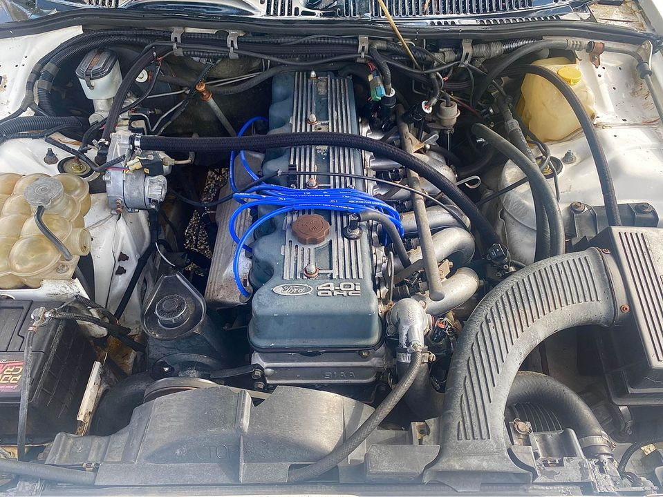

Are you the owner of an old and used Ford? Are looking for ford wreckers in Perth to take it off your hands for a good price? Welcome to WA Auto Parts, your provider of car wrecking services in Perth. We are serving clients across Perth since 2007. We have our foundations in Perth and have been providing safe, reliable and quick response car wrecking services.
Ford Wreckers WA is a car wrecker in Perth that handles the care and recovery of old Ford cars. We work with the latest heavy duty tow trucks and wreckers. As a wrecker, you will be provided all the equipment, and advice to keep your car in the best possible shape. You can choose to let your car go to the wreckers, if you don't want to bother maintaining it anymore. Our team is experienced and will always provide you with the best car wrecking services to your old Ford car. Tow Trucks in Perth We also offer automotive towing services. We have some of the latest and the safest wreckers in Perth. If you are looking for towing services in Perth, please visit our website or call us to get free quotes. We do the best to recover your old Ford and it will give you the peace of mind.

Our services of vehicle destruction include the demolition of old and used car body, mainly by our specialists. In order to set up this service, we have the necessary equipment and specialists in place. We always maintain a positive outlook, based on the professionalism and honesty. Our experts will approach this removal with caution to ensure that your vehicle is demolished without any problem. We do not accept rotten or damaged cars, we only deal with good and new cars. We take pride in providing our customers with these excellent services of vehicle destruction. Our main focus is to protect the environment and to preserve the state of your old and new cars.
We can provide the best wreckers service in Perth for any Ford vehicle. What type of car does WA Auto Parts specialise in? You’ve found the best wreckers in Perth with the help of the stock list of cars we have. What makes us different from the rest? First of all, we are committed to our clients and to ensuring that their cars are taken to the best wreckers in Perth. Second, we strive to offer the highest level of value for money. Whether it is in terms of the yard, the expertise and experience of our wreckers, or just the price of the car, we provide the best wrecker service in Perth. What is the price range for the Ford Wreckers Service in Perth? Our prices are competitive and well thought out. They include our insurance clearance, transport and labour.
Our wrecking services includes: Buying Cars in Perth Mopar Parts and Auto Repairs Oil Change Service General Salvage and Old Vehicle Inspection Car Recycling We will handle the car buying process from the start to the end, so that you can rest easy knowing your car is sold to a reliable wrecker with the required experience. If you are looking to purchase a car, you may opt for our Dealership Option. This way, you save money, and save your time. You can go directly to our Perth wrecker, meet our professional sales team, and look for the car of your dreams. We also have our Mopar and parts and auto repairs services, where we can repair the car to its new like-new condition. We also offer our car recycling services, where we can get rid of your old car for a good price.
We have served over 1000 customers and even though we have a very low cost of ownership our customer’s satisfaction is our greatest accomplishment. Our customers are very satisfied with the services. We are running under a 24 hours a day, 7 days a week service we have fulfilled this promise in all regards. It doesn’t matter which part of Western Australia you live in, our services are accessible across the whole of the country. All you need to do is to give us a call at our dispatch line 6371 9211 and we will come to you and let you know the estimated time of arrival of our wreckers to take your car off your hands.
Address:103 Sheffield Rd, Welshpool WA 6106
Phone: (08) 9358 1392